Finding Characters and Animations
When I started playing around with Unity3D and developing games earlier this year, I always had a vision to create games using characters with cool animations. However I never really though about where these characters would come from and how animating them would work. I think it is simple to see or play games and just assume that characters are a given without much thought for the creation and animation of said characters. With all that being said, in search of characters and animations for making games I ran into a great FREE source for both characters and animations - mixamo mixamo is brought to us by Adobe and all you need to do is create an Adobe account (also FREE) and you will be able to download characters and animations that you can use in your projects, and and and you can use characters and animations royalty free for personal, commercial, and other non-profit projects. What a great time to be alive and developing games :D. Enough rambling in this post I will walk you through creating an account for mixamo, downloading characters and animations, and finally importing those characters to Unity3D and appying animations to them.
Create mixamo account
To create a mixamo account, if you do not already have an active Adobe account go to the mixamo main page mixamo. Then select the sign up button, create an account and log in. If you already have an active account log in.
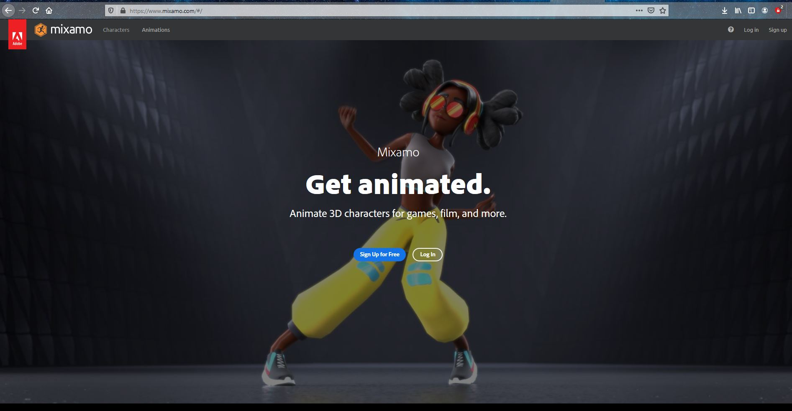Downloading characters and animations
After signing into you mixamo account, it will bring you to a screen very similar to the screen below. There are two tabs, Characters and Animations. The Characters tab contains all of the free characters you can download and use, and the animations tab contains all the animations you can download and apply to any of the characters in the characters tab. First we will walk through downloading a charcter:
- First Select the Characters tab
- Select the character you like, then it should be displayed on the right in a larger viewing window. In this case we chose "Erika Archer" for this demo
- Finally, Download the character. 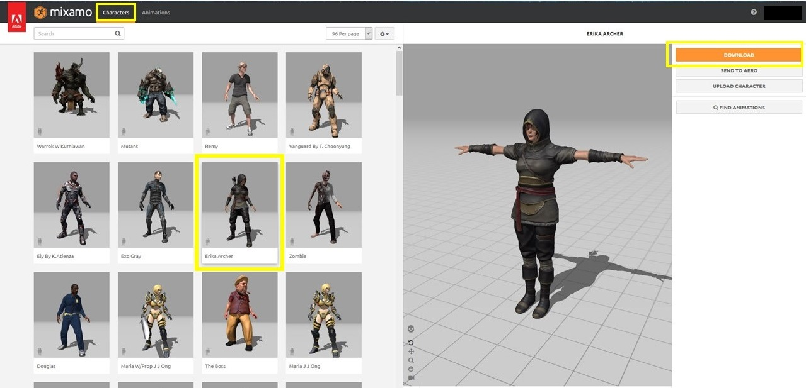
- You will get a prompt like below. 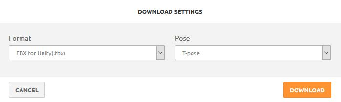
- Second, select the Animations tab
- Select the animation you would like to apply to the character (we have choosen capoeira), it should now be applied to the character and be displayed on the right in the larger viewing window. Each animation usually has additional settings that allow you to play around with the posture and motions of the animation, this is also located to the right of the viewing window. A settings that is important to pay attention to in some animations is the In Place toggle, when this option is available it forces the animation to occur in place without physically displacing the character. An animation that has this setting is the Running animation, play around with it to see the difference. I use this when I want a character to run in place, the actual displacement in the game when I use this animation is handled by my character controller. 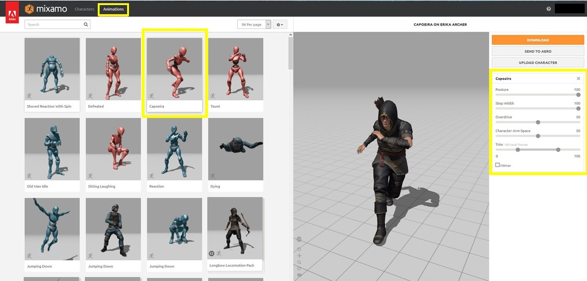
- Finally, Download the animation. You will get a similar prompt to when you downloaded the character 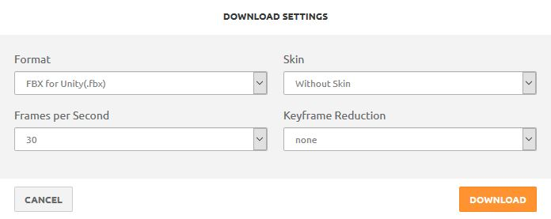
Make sure the Format you select is FBX for Unity. The Pose does not matter, I typically leave that as the default.
A few things to note when displaying animations, some animations require the character to move around. You can easily keep the character always in view by toggling the camera follow.
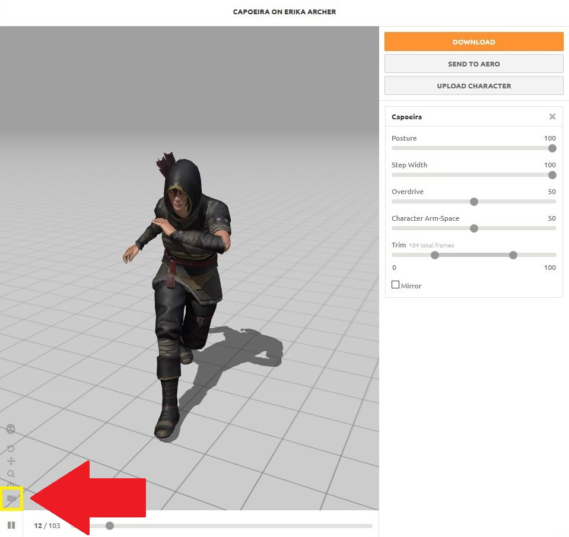Again make sure the Format you select is FBX for Unity. Skin can be set to either With Skin or Without Skin, I typically select Without skin - Skin referes to if you want the character to be included with the animation download. Frames per second refers to the frame rate of the animation, I typically choose 30 or higher. Never had any issues with glitchy animation. Finally Key Frame Reduction this is allows the animation to skip "non-key" frames - frames that are within some delta of the previous frame in terms of similarity, this leads to less frames in your animation, but can cause animation to look less fluid. Not every one notices this things, but I typically set it to none and let the Unity3D Gods handle the rest heh.
Import character and animation to Unity3D
Open/Create a Unity3D project and drag the character and animation into the Project window. I typically like to put things in folders for organization, see the Animations and Characters folders.
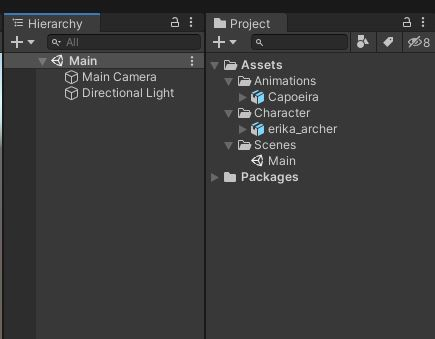Now when we drag our character GameObject from the Characters folder into the scene window, we notice that the textures of the charater are not showing. This because our character model is not configured properly.
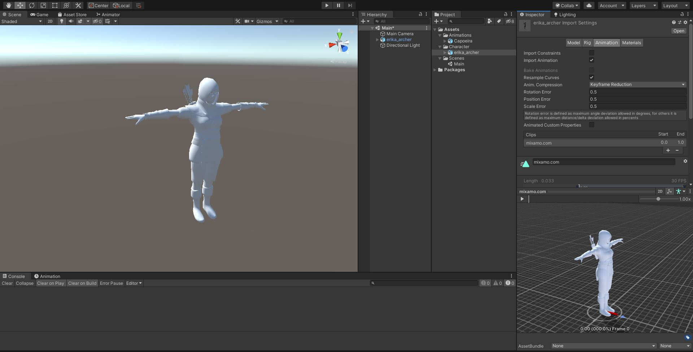To configure our character and animation do the following:
- First select the Character GameObject model in the Project window
- Select the Materials tab in the inspector
- Under this tab, Select Extract Textures button. This will download extract the textures associated with the character and prompt you to save these textures somewhere. I like to use folders, so I create a new folder called Textures in the Characters folder and select the new Textures folder as the destination for the textures. After this you will notice that the Character should now have the textures visible.
- Repeat the same step above for the Materials. Extract Materials create a folder in the Characters folder and place the materials in there. 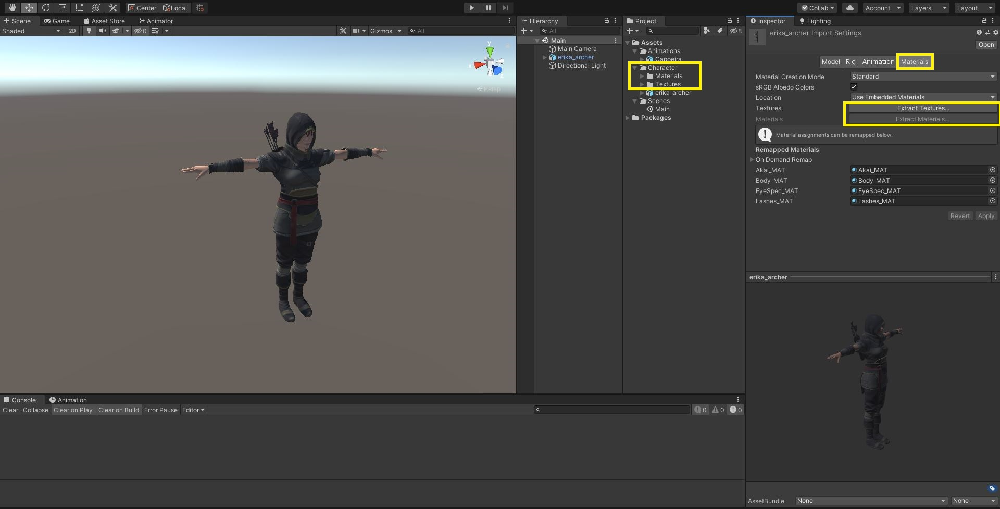
- Next, Select the Rig tab in the inspector
- Under this tab, set the Animation Type to Humanoid because our character is a human. Set the Avatar Definition to Create From This Model
- Select Apply 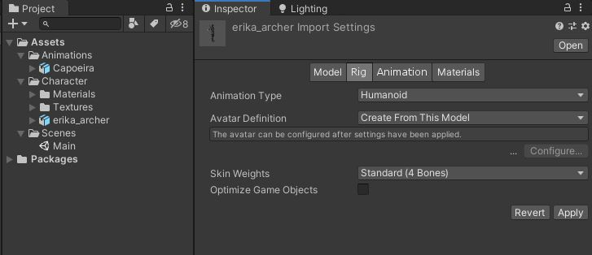
By default our animation will not show up on our character. We need to configure this to work:
- Select the Capoeira GameObject in the Project window
- Under the Rig tab in the inspector, set the Animation Type to Humanoid. Set the Avatar Definition to Create From Other Model, because we will be using our character as the model for this animation. Click on the Source field and set it to our character's avatar
- Select Apply

Apply animation to character
Finally, to apply the animation to the character. We have to do the following steps:
- First, create an Animator Controller. Select the Animation GameObject (Capoeira) in the Project window. I named mine CapoeiraAnimation 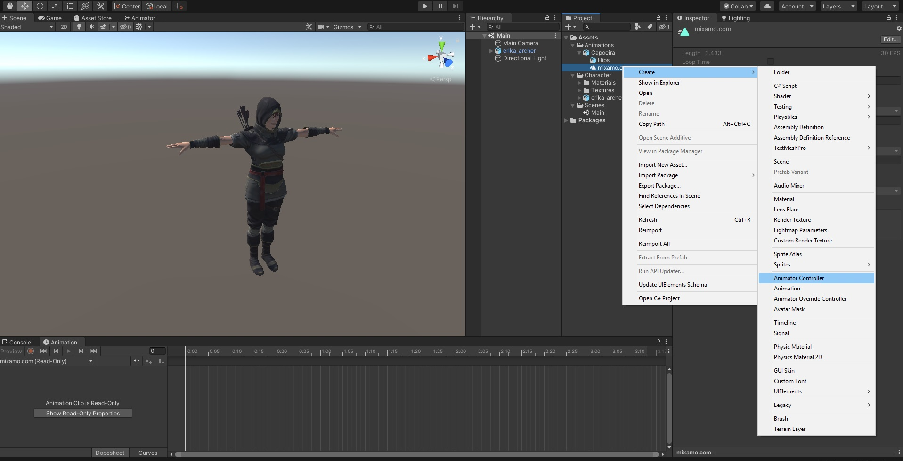
- Select the character GameObject (erika_archer) in the Hierarchy window. Drag the CapoeiraAnimation into the Controller field of the Animator 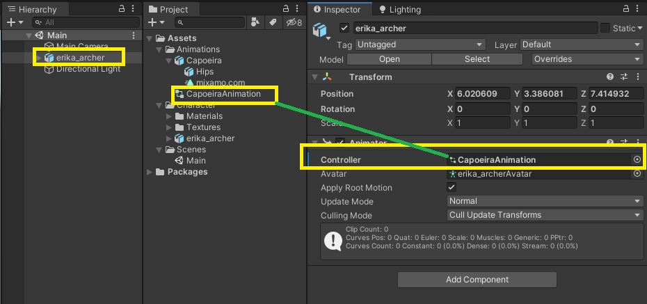
- Open the Animator window
- Select the Opened Animator window, Select the CapoeiraAnimation, then drag the animation clip (mixamo.com is the default name) into the Animator window 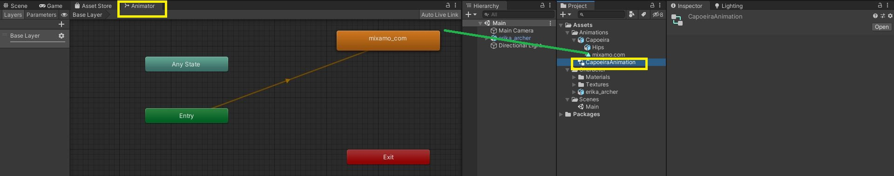
- Finally, press the Play button and you should see the character in the scene performing the animation.

I hope you were able to follow through and get the Character imported and the animation working on your end. There are a ton of things you can do with the characters and animations you get from mixamo. This is just a basic tutotial to get things into the Unity3D editor and moving around. Using animations for a real game requires some additional steps, I think the best way to get better at using characters and animations is to actually start using them. Also, some great resources to learn more about Unity3D animations are:
To get a better idea of some projects you can create, I have used characters and animations in a few of my projects centered around mixamo charactes, so check those out.